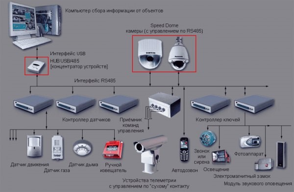

Цели работы:
1. Изучить базовые принципы телеметрии в электронных системах безопасности
2. Изучить IP камеры, принципы построения сетей на IP камерах, принципы удаленного управления IP камерами
3. Провести анализ программных продуктов для управления IP камерами
4. Изучить программный продукт IP Camera Viewer
5. Осуществить поиск и подключение IP камер, при возможности осуществить управление IP камерой
Теоретические сведения:
Система видеонаблюдения
Система видеонаблюдения — это программно-аппаратный комплекс (видеокамеры, объективы, мониторы, регистраторы и др. оборудование), предназначенный для организации видеоконтроля как на локальных, так и на территориально-распределённых объектах. К функциям видеонаблюдения относится не только защита от преступников, но и наблюдение за работниками, посетителями в офисе, на складе или в магазине, контроль деятельности в любом помещении.
Таким образом, система видеонаблюдения обеспечивает:
• визуальный контроль ситуации на охраняемом объекте — предоставление информации на пост наблюдения в режиме реального времени;
• запись видеоинформации на цифровой видеорегистратор, что позволяет документировать события, происходящие на объекте;
• выполнение функций охранной сигнализации через детекторы движения видеокамер или внешних охранных датчиков и информированность оператора системы о возникновении тревоги в контролируемой зоне
Камеры видеонаблюдения могут быть различных форм и типов.
На сегодняшний день системы видеонаблюдения являются самым эффективным техническим средством обеспечения безопасности. Мы сталкиваемся с ними в повседневной жизни каждый день, совершая покупки, снимая деньги в банкомате, пользуясь общественным транспортом. Торговые центры, супермаркеты, банки, предприятия промышленности, административные здания, бизнес-центры обязательным элементом служебной инфраструктуры включают системы видеонаблюдения. Проникновение на территорию или в помещения предприятия посторонних лиц может иметь самые неприятные последствия: от хищения материальных ценностей до получения доступа к сведениям, составляющим коммерческую тайну компании. Системы видеонаблюдения позволяют принимать оперативные решения в подобных ситуациях и даже предотвращать их просто за счет «эффекта присутствия» видеокамеры, фиксирующей все действия возможных нарушителей.
Немаловажной функцией систем видеонаблюдения является помощь в расследовании разнообразных инцидентов, имевших место на некотором объекте наблюдения: от нарушения сотрудником внутренних правил компании до уголовных преступлений. Идентификация причастных лиц, выяснение причин происшествия и принятие необходимых решений сильно упрощается при наличии хорошо спроектированной и налаженной системы видеонаблюдения.
В состав системы видеонаблюдения входят:
• видеокамеры;
• объективы для видеокамер;
• корпуса;
• поворотные устройства для видеокамер;
• устройство для обработки видеосигналов;
• записывающее устройство;
• видеомонитор;
• вспомогательные устройства.
Видеокамеры
На данный момент наибольшее применение получили видеокамеры на основе ПЗС-матриц. В большинстве случаев используются короткофокусные объективы типафикс-фокус, не требующие фокусировки, и автоматическое управление экспозицией. Обычно разница между камерами, основанными на матрицах разных производителей, проявляется в сложных условиях освещения. В линейке каждого производителя присутствуют как дешевые и стандартные по параметрам матрицы, так и матрицы повышенного разрешения и/или повышенной чувствительности.
По конструктивным особенностям камеры можно разделить на следующие типы:
• Модульная видеокамера — бескорпусное устройство в виде однослойной печатной платы, наиболее распространён размер 32×32 мм, предназначена для установки в термокожухи, полусферы и т. п.
• Минивидеокамера — видеокамеры в квадратных или цилиндрических корпусах, обычно применяемых как готовое изделие для установки внутри помещений.
• Корпусная видеокамера — наиболее распространённый форм-фактор устройств, называемый также камера стандартного дизайна или Box camera. Превалирующее количество устройств данного типа поставляется без объектива и кронштейна крепления, оставляя потребителю возможность наиболее гибкого конфигурирования конечного устройства, при использовании с термокожухом возможно использование устройства вне помещения.
• Купольная видеокамера, также известная как Dome camera — корпус представляет собой полусферу или шар, прикреплённый к основанию. Может быть выполнена как из пластика, так и из металла.
• Управляемые (поворотные или скоростные видеокамеры) — комбинированное устройство, состоящее из камеры, трансфокатора и поворотного устройства. Наибольшее распространение получили так называемые интегрированные камеры, выполненные в виде купола.
• Гиростабилизированные видеокамеры — видеокамеры, используемые на подвижных объектах с целью получения стабилизированного изображения.
По типу выходного сигнала видеокамеры подразделяют на аналоговые и цифровые. Большинство цифровых камер передают сигнал по стандартной компьютерной сети типа Ethernet — так называемые IP-камеры.
По способу передачи данных видеокамеры делятся на проводные и беспроводные. Последние имеют в своем составе передающее устройство и антенну. Беспроводными в том числе являются цифровые IP-камеры, передающие изображение по радиоканалу сети Wi-Fi — так называемые Wi-Fi-видеокамеры.
Объективы
Объектив — устройство, предназначенное для фокусировки светового потока на матрице видеокамеры.
Объективы делятся на:
• монофокальные — объективы с постоянным фокусным расстоянием;
• вариофокальные (трансфокаторы) — объективы с переменным фокусным расстоянием, изменяемым вручную или дистанционно.
По способу управления диафрагмой объективы делятся на объективы с фиксированной диафрагмой, с управлением диафрагмой Direct Drive и с управлением диафрагмой Video Drive.
Корпуса
Для различных условий эксплуатации модульные видеокамеры помещаются в корпуса различных типов, например, купольный корпус (традиционный для камер, устанавливаемых внутри помещений), термокожух (корпус, защищённый от воздействия осадков и низких температур; предназначен для камер, устанавливаемых на улице), антивандальный корпус (для уличной и внутренней установки) и др.
Средства обработки изображения
Последовательный видеокоммутатор (Switcher) — устройство для последовательного вывода изображения от камер на 1 монитор. (Устарели с появлением цифровых устройств записи.)
Квадратор — устройство для одновременного вывода изображения от камер (обычно 4 или 8) на 1 монитор. (Устарели с появлением цифровых устройств записи.)
Мультиплексор — устройство для одновременного вывода изображения от камер (обычно 4/8 или 16) на 1 монитор и формирования последовательности изображения от всех камер для записи на аналоговый магнитофон. (Устарели с появлением цифровых устройств записи.)
Матричный видеокоммутатор (Matrix switcher) — устройство для одновременного вывода изображения от любой из камер в системе на любой монитор в системе. Гораздо более сложное и эффективное устройство, чем обычный видеокоммутатор.
Устройства записи видео
Видеомагнитофоны — устройства записи на магнитную ленту. Стандартно на кассету E-180 можно записать до 24 часов видео, при пониженных требованиях к скорости записи до 960 часов. Практически вышли из употребления.
Цифровые регистраторы — современные устройства записи на жёсткий диск (HDD). Подразделяются на видеосерверы(основанные либо на обычном ПК под управлением Windows или Linux (со специализированной платой видеозахвата в случае применения аналоговых камер) и программным обеспечением записи и обработки видео, либо на специально собранном специализированном компьютере, являющемся ядром крупной системы безопасности) и автономные видеорегистраторы (DVR, non-PC или Stand-alone).
Прочие специализированные регистраторы — различные типы устройств применяются для решения отдельных задач видеонаблюдения. Например, для записи и хранения информации от камер системы видеонаблюдения, установленных в вагонах Московского метрополитена, помимо прочих устройств применяется взрывозащищённая память типа флеш.
Вспомогательные устройства
• Тепловизоры — устройство для наблюдения за распределением температуры исследуемой поверхности, например для обнаружения человека в тёмное время суток по его тепловому излучению.
• Автоматические фотокамеры — используются для расширения возможностей систем видеонаблюдения.
• Микрофоны — используются для синхронного получения видеоизображения и звука. В ряде случаев используется разное количество видеокамер и микрофонов — асинхронные системы видеонаблюдения и аудиоконтроля.
IP-видеокамеры
Под IP-камерой понимают цифровую видеокамеру, особенностью которой является передача видеопотока в цифровом формате по сети Ethernet и TokenRing, использующей протокол IP.
Являясь сетевым устройством, каждая IP-камера в сети имеет свой IP-адрес.
В отличие от аналоговых камер, при использовании IP-камер, после получения видеокадра с ПЗС (англ. CCD) или КМОП (англ. CMOS) матрицы камеры, изображение остаётся цифровым вплоть до отображения на мониторе.
В отличие от аналоговых камер, при использовании IP-камер, после получения видеокадра с ПЗС (англ. CCD) или КМОП (англ. CMOS) матрицы камеры, изображение остаётся цифровым вплоть до отображения на мониторе.
В качестве протокола транспортного уровня в IP-камерах могут использоваться протоколы: TCP, UDP и другие протоколы транспортного уровня модели OSI. Распространена возможность электропитания IP-камер через PoE.
Благодаря тому, что в IP камерах нет необходимости передавать аналоговый сигнал в формате PAL или NTSC, в IP-камерах могут использоваться большие разрешения, включая мегапиксельные. Типичное разрешение для сетевых камер: 640x480 точек. Существуют камеры с мегапиксельными разрешениями: 1280x1024, 1600x1200 и более высокими.
Благодаря отказу от использования стандартов аналогового телевидения PAL и NTSC, IP-камеры могут передавать видеокадры с требуемой частотой. Существуют IP-камеры с частотой передачи больше 60 кадров в секунду.
IP-камеры можно отнести к категории веб-камер. Понятие веб-камера описывает функцию устройства и является более широким. Например, к веб-камерам относятся камеры с интерфейсом USB и FireWire.
Преимущества по сравнению с аналоговыми камерами
• Построение масштабируемых распределённых систем видеонаблюдения;
• широкий диапазон настроек работы камеры;
• отсутствие двойной конвертации сигнала, свойственного аналоговым камерам;
• оптимизация видеопотока и видеоизображения;
• отсутствие привязки к аналоговым видеостандартам, в результате чего;
• многие IP-камеры обладают разрешением, недоступным для аналоговых;
• есть возможность использования прогрессивной развёртки;
• возможность передачи аудиопотока по сети параллельно с видеопотоком;
• возможность передачи потока с высоким сжатием, которое позволяет сэкономить место на цифровых носителях, не требуя при этом высокопроизводительного видеорегистратора.
Недостатки по сравнению с аналоговыми камерами
• Цена на IP-камеры выше, чем у аналоговых камер, но если рассматривать оборудование объекта системой видеонаблюдения в целом, то цены на «проект + оборудование + монтаж» являются сопоставимыми;
• светочувствительность матрицы мегапиксельных IP-камер как правило существенно ниже, чем у аналоговых камер, что затрудняет использование IP-камер на улице;
• необходимость декомпрессии видеопотока на компьютерной платформе (клиенте);
• подверженность к внешнему сетевому воздействию по сети (взлому);
• аппаратное зависание (при отсутствии функции Watchdog);
• ограничение длины сегмента 100 м при использовании медной витой пары, что вынуждает через каждые 100 метров устанавливать коммутаторы либо использовать другие среды передачи сигнала.
Телеметрия (телеизмерение) — совокупность технологий и техники позволяющей производить удалённые измерения и сбор информации для предоставления оператору или пользователю для контроля за состоянием объектов на расстоянии. В качестве среды передачи данных используются как беспроводные (радио, GSM/GPRS, ZigBee, WiFi, WiMax, LTE), так и проводные (телефонные, ISDN, xDSL, компьютерные) сети (электрические или оптические). Для сбора и передачи информации в системах телеметрии могут использоваться как последовательные протоколы RS-232, RS-485, CAN, так и различные сетевые протоколы TCP/IP, Ethernet.
Сущность телеизмерения заключается в том, что измеряемая величина, предварительно преобразованная в ток или напряжение, дополнительно преобразовывается в сигнал, который затем передается по каналу связи. Таким образом, передается не сама измеряемая величина, а эквивалентный ей сигнал, параметры которого выбирают так, чтобы искажения при передаче были минимальными
Телеметрия нашла своё применение в следующих областях:
• узлы магистральных линий связи;
• сельское хозяйство.
• водоснабжение и водоотведение
• вендинг
• Уменьшить простои автоматов
• Оптимизировать график посещения торговых автоматов
• Контролировать вендерменов (предотвращать хищения товаров и денег)
• Своевременно обслуживая автоматы, увеличить срок их работы
• Планировать закупки, продажи.
• Медицина
• оборона и космос
• разведка
• ракетная техника
• авто- и мотоспорт
• бурение наклонных скважин
• системы глобального позиционирования, в том числе Спутниковый мониторинг транспорта
• энергетика
• системы безопасности (сигнализация, видеонаблюдение)
• Умные дома
• исследование дикой природы
• Розничная торговля
• Правоохранительная деятельность
Телеметрия в ЭСБ
Телеметрия в ЭСБ – это удаленное управление различными устройствами (скоростными купольными камерами, поворотными платформами, трансфокаторами, прожекторами и прочими устройствами видеонаблюдения).

Сигналы телеметрии передаются по отдельной линии. Расстояние ограничено только применяемым протоколом связи. Если, например, это RS-485, то на расстоянии до 1500 метров можно обеспечить устойчивую связь с приемником телеметрии. Видеосигнал можно передать по витой паре. В системах, построенных на основе применения оптоволоконных линий связи, интерфейсные линии связи не нужны. И команды телеметрии, и видеосигнал передаются по оптоволоконным линиям, при этом дальность передачи сигналов практически не ограничена.
Для того чтобы передать эти сигналы, нужны специальные устройства преобразования сигнала управления от пульта. Как правило, в конструкции самого пульта уже заложена возможность для подключения линии связи, интерфейсной или оптоволоконной. А для приема есть два варианта. Может использоваться стационарное поворотное устройство с соответствующим приемником команд телеметрии, которое устанавливается отдельно от камеры. Второй вариант – использование получивших достаточно широкое распространение скоростных купольных камеры, которые имеют встроенный интерфейс для приема сигналов управления, то есть, в едином корпусе содержат камеру с объективом и устройство панорамирования в горизонтальной и вертикальной плоскостях, а также приемник команд управления. У каждого варианта есть свои плюсы и свои минусы.
Поворотные устройства, особенно в уличном исполнении, - довольно громоздкие конструкции, выполненные в соответствии с условиями эксплуатации на открытом воздухе: герметизация, встроенные нагреватели, соответствующие механизмы, которые надежно работают при низких температурах. Устройства, использующиеся для установки внутри помещений, более компактны, но всё равно отдельно от камеры приходилось устанавливать платформу с двигателем, что далеко не всегда было удобно для инсталляторов и пользователей.
Скоростные купольные камеры заменили стационарные поворотные устройства. Это камеры, как правило, выполнены в виде цилиндра. Внутри располагаются двигатели, бескорпусная камера с мощным объективом. У этих устройств практически нет ограничений по установке внутри помещений, инсталлятор всегда может найти вариант установки, соответствующий дизайну помещения.
Один из недостатков стационарных поворотных устройств заключается в том, что они работают с постоянной скоростью. Причем, скорость эта невысока. В скоростных купольных камерах этого недостатка нет. Больше того, появились новые алгоритмы формирования сигналов управления. Появились пульты с джойстиками, что значительно повысило удобство управления. Джойстик дает переменный сигнал, дешифратор камеры принимает его и приводит в действие исполнительное устройство поворотного механизма. В зависимости от угла наклонения джойстика мгновенно формируется команда на соответствующую скорость движения камеры. Такой алгоритм называется пропорциональным управлением. Есть в купольных камерах и внутреннее логическое устройство, которое в зависимости от выбранного угла обзора объекта наблюдения, автоматически регулирует скорость вращения камеры. Если угол обзора узкий, и камера захватывает удаленный объект, скорость ее перемещения ограничивается. И, наоборот, при широком угле обзора скорость перемещения камеры увеличивается. Здесь тоже есть некая пропорциональность.
Скоростные купольные камеры доказали свои преимущества, и были по достоинству оценены инсталляторами и потребителями. Спрос рождает предложение, и разработчики довольно быстро откликнулись на ожидания рынка. Появились скоростные купольные камеры в уличном исполнении. Правда, не сразу. Сначала использовались уличные кожухи в виде сфер или полусфер. Внутри кожухов, кроме камеры, устанавливались вентиляторы и нагреватели, обеспечивалась герметизация.
Следующий, совершенно закономерный этап – появление уличных скоростных купольных камер. Это уже были законченные устройства, в герметичном исполнении, со всем необходимым для обеспечения работы в любых климатических условиях встроенным оборудованием.
Функциональные возможности скоростных купольных камер очень широкие. Можно, например, запрограммировать с пульта все точки, которые камере нужно «посмотреть». Таких точек предустановки может быть много. Производители некоторых изделий заявляют возможность десятков и даже сотен запрограммированных заранее точек предустановки. Привлекательная для заказчиков функция, но, если честно, за свою практику я не встречал объектов, для обеспечения охраны которых необходимо больше 30-40 точек предустановок.
Скоростные купольные камеры обладают большой скоростью работы по предустановкам. В режиме патрулирования буквально за секунду камера может сделать полный оборот. Камера может получать сигналы от входящих в систему безопасности охранных или пожарных извещателей. Причем, как напрямую, так и через приемно-контрольные устройства. То есть, сработал извещатель охранной сигнализации, и камера моментально направляет свой объектив в эту точку.
Это очень удобно, например, при организации охраны периметра. Скоростные купольные камеры стремительно заняли свою нишу на рынке ТСБ. Больше того, их экспансия продолжается. Практически ежегодно ведущие производители предлагают новые модели.
Тем не менее, стационарные уличные поворотные устройства в целом свои позиции сохранили. Особенно при оснащении объектов, где требуется оборудование видеонаблюдения с определенными степенями защиты, например, во взрыво- или пожарозащищенном исполнении. На таких объектах купольные камеры приходится помещать в специальные кожухи, а любой дополнительный кожух – это потери. Потери в чувствительности, в качестве получаемого изображения.
Использование стационарных поворотных устройств предпочтительнее и на объектах, где нет возможности обеспечить нормальную освещенность и, стало быть, для получения нормального изображения необходима ИК-подсветка. Можно обычную монохромную камеру с мощным объективом и ИК-прожектор поместить на платформу, чтобы обеспечить получение изображения в нужной точке и ИК-подсветку в этой точке. Ведь далеко не всегда возможно осветить всю территорию, а необходимость отслеживать ситуацию, тем не менее, возникает.
Камеры со стационарными поворотными устройствами можно легко комбинировать в одной системе с купольными камерами.
Несколько слов о пультах. Есть простейшие пульты без пропорционального управления. Они используются, когда камеры работают только в автоматическом режиме по заранее запрограммированным точкам. Разделяются пульты и по количеству управляемых ими камер. Есть пульты, которые могут управлять только одной камерой, они подключаются к ней напрямую. Многофункциональные пульты строятся по принципу управления каким-то центральным устройством. Через это устройство пульт может управлять всеми входящими в систему камерами. С помощью таких пультов можно легко организовывать дополнительные рабочие места по управлению системой. Пульты по тому же интерфейсу, которым они связаны с камерами, могут связываться между собой.
Порядок выполнения работы:
1. Изучить программу «IP Camera Viewer».
2. Получить задание у преподавателя
3. На базе программного продукта IP Camera Viewer осуществить настройку IP камер. Подключить Web-камеру ноутбука и осуществить поиск доступных камер сети Internet. При подключении к камере учитывать ее производителя и модель и в настройках при добавлении камеры осуществить необходимый поиск по базе. При возможности подключения к камере произвести ее настройку и осуществить управление камерой.
4. Оформить отчет.
Содержание отчета:
1. Титульный лист
2. Цель работы
3. Вариант задания
4. Ход работы с пояснениями
5. Выводы по работе
Контрольные вопросы:
1. Что такое система видеонаблюдения и что входит в ее состав?
2. Какие бывают типы видеокамер?
3. Преимущества и недостатки IP-камер?
4. Какие бывают средства обработки изображения?
5. Что понимают под таким понятием как телеметрия?
6. В каких сферах жизни присутствует телеметрия?
7. Приведите примеры телеметрии в ЭСБ.